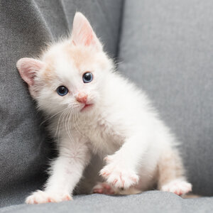

My favorite Animal!

To know more about Cat!
- Rapid Growth: Kittens experience rapid growth in their first weeks of life, opening their eyes around 7 to 10 days after birth.
- Communication through Purring: Cats, including kittens, use purring not only for contentment but also as a form of communication, especially between mothers and their offspring.
- Instinctual Hunting Skills: Even at a young age, kittens exhibit playful behaviors that mimic hunting, helping them develop essential motor and survival skills.